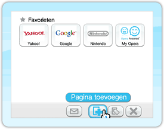
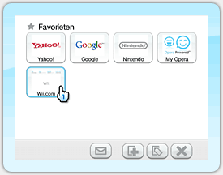
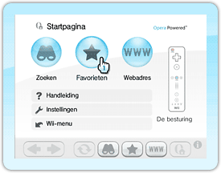
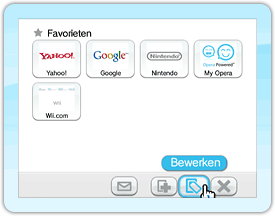
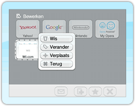
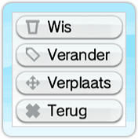
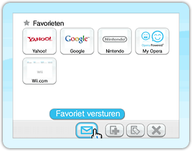
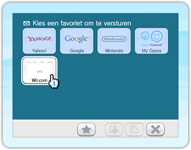
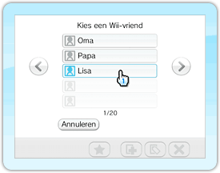

Maak, verander en verwijder links naar je favoriete pagina's. Ook kun je favoriete pagina's naar je Wii-vrienden versturen.
Een webpagina toevoegen aan je favorietenlijst
* Je kunt maximaal 56 pagina's in je favorietenlijst bewaren.
Open de website die je wilt toevoegen door of te kiezen.
Wijs aan als de webpagina in beeld verschijnt en druk op om het favorietenscherm te openen.

Wijs aan en druk op . Je hebt nu een nieuwe favoriet aangemaakt!
Eerder toegevoegde favorieten bekijken

Wanneer je ten minste één webpagina aan je favorieten hebt toegevoegd, dan kun je het favorietenscherm openen door aan te wijzen en op te drukken. Wijs de website aan die je wilt bekijken en druk op . De browser opent dan de site.
Eerder toegevoegde favorieten bewerken

Wijs aan en druk op . Het favorietenscherm wordt geopend.

Wijs aan en druk op om je favorieten te bewerken.

Wijs de webpagina aan die je wilt veranderen en druk op om de gegevens voor deze webpagina aan te passen.

Wijs de optie aan die je wilt gebruiken en druk op .
Volg de instructies op het scherm.
Favorieten naar een Wii-vriend versturen
Wijs aan en druk op om het favorietenscherm weer te geven.

Wijs FAVORIET VERSTUREN aan en druk op . Het scherm zal van kleur veranderen.

Wijs de webpagina aan die je naar een Wii-vriend wilt versturen, en druk op om naar het adresboek te gaan.
 Wijs de Wii-vriend aan naar wie je de webpagina wilt versturen, en druk op . Het berichteninvoerscherm wordt geopend.


 aan en druk op
aan en druk op